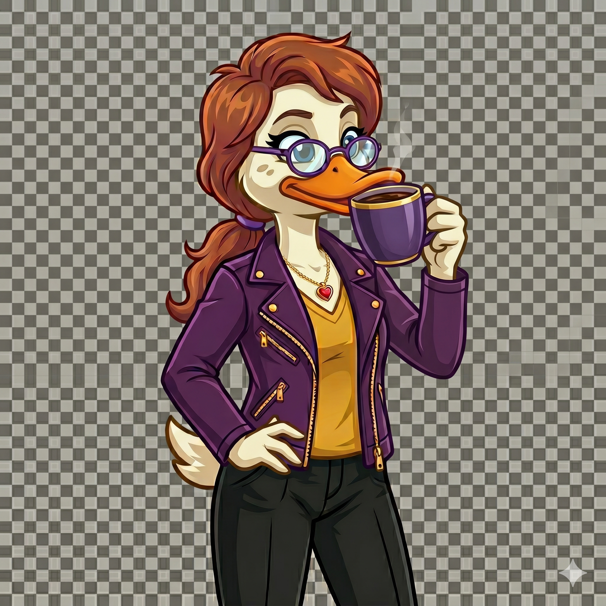
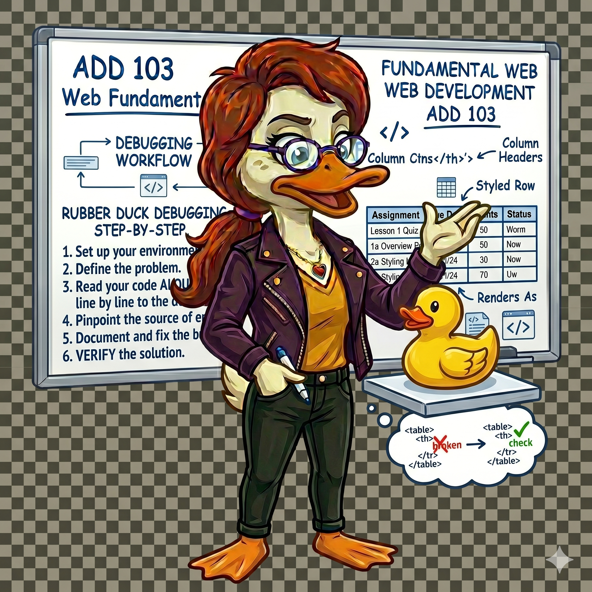
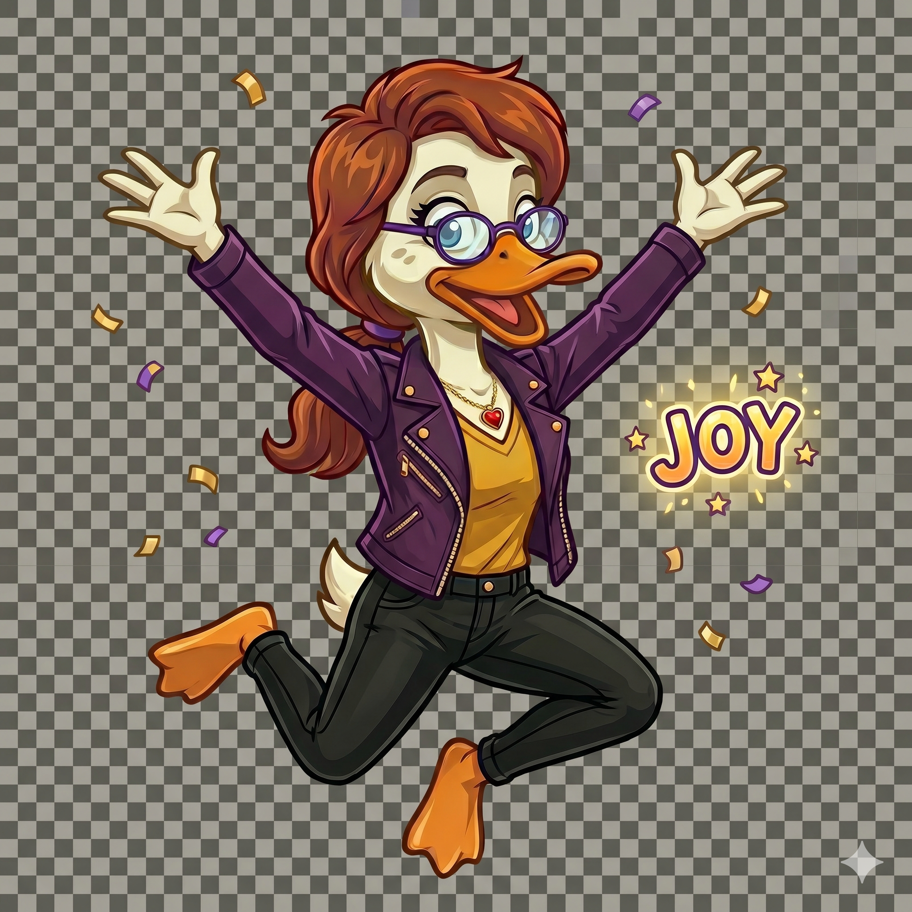

Every semester, Ducktor Merry Quacksalot — Dr. Q — shows up in this course to say the things your instructor is thinking but sometimes forgets to say out loud.
She is not here to quiz you. She is not grading you. She is here because learning to code is genuinely hard sometimes, and it helps to have someone in your corner who has seen it all before and is not even slightly surprised when things go wrong.

Look for Dr. Q in every lesson. She will show up at key moments to:
Cut through the jargon and tell you what actually matters
Point out the mistake you have been staring at for 20 minutes
Remind you what actually matters for this lesson
Because finishing a hard thing deserves acknowledgment

There is a real technique in software development called rubber duck debugging. When you are stuck, you explain your code out loud — to a rubber duck, to a plant, to anyone who will listen — and the act of explaining it forces your brain to find the problem.
Dr. Q is your rubber duck. She is always listening. When something is not working:
You will see Dr. Q throughout this course. Now you know who she is.
Go meet VS Code. She will be there when you need her.
